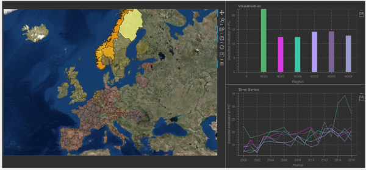
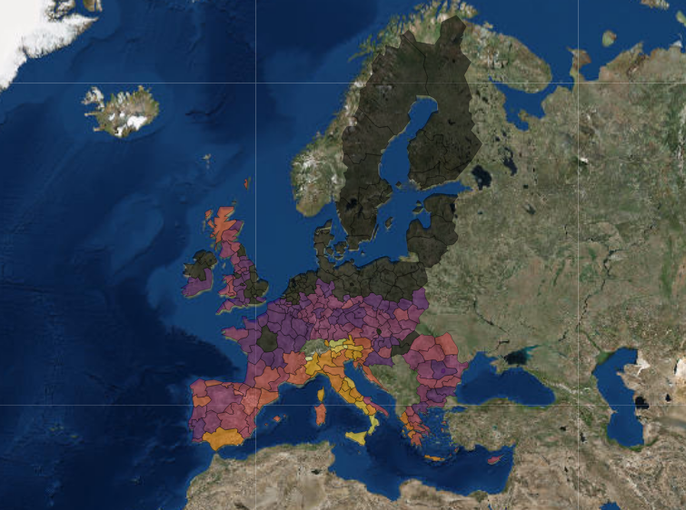

Nuts¶
Warning
Write Doc!
Warning
Images need to be updated after a colorscheme is chosen.
Overview¶
The NUTS modul is responsible for the visual presentation of geographic data based on the NUTS-tiling. The main tool for the presentation is a map, but a bar- and line-plot are provided aswell. Apart from the plots, the datas presentation is controllable by several components to select a dataset and datapoint.
The Map is for displaying the geographic distribution of the selected datapoint. It is also the way to select regions for the two other plots.
The barplot provides the ability to compare selected regions.

The lineplot draws the whole timeseries of the selected regions.

Loading the data¶
Warning
Write Doc!
Controling the presentation¶
Warning
Write Doc!